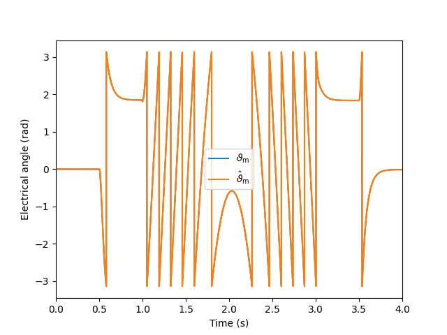

Note
Click here to download the full example code
Vector-controlled 2.2-kW PMSM drive with signal injection
This example simulates sensorless vector control of a 2.2-kW PMSM drive. Square-wave signal injection is used with a simple phase-locked loop.
Import the packages.
import numpy as np
import motulator as mt
import matplotlib.pyplot as plt
Compute base values based on the nominal values (just for figures).
base = mt.BaseValues(
U_nom=370, I_nom=4.3, f_nom=75, tau_nom=14, P_nom=2.2e3, p=3)
Configure the system model.
motor = mt.SynchronousMotor(p=3, R_s=3.6, L_d=.036, L_q=.051, psi_f=.545)
mech = mt.Mechanics(J=.015, B=0)
conv = mt.Inverter()
mdl = mt.SynchronousMotorDrive(motor, mech, conv)
Configure the control system.
pars = mt.SynchronousMotorSignalInjectionCtrlPars(
T_s=250e-6,
alpha_c=2*np.pi*100,
alpha_s=2*np.pi*4,
w_o=2*np.pi*40,
U_inj=250,
L_d=.036,
L_q=.051,
psi_f=.545,
i_s_max=2*base.i,
tau_M_max=2*base.tau_nom)
ctrl = mt.SynchronousMotorSignalInjectionCtrl(pars)
Set the speed reference and the external load torque.
# Speed reference
times = np.array([0, .25, .25, .375, .5, .625, .75, .75, 1])*4
values = np.array([0, 0, 1, 1, 0, -1, -1, 0, 0])*base.w*.1
ctrl.w_m_ref = mt.Sequence(times, values)
# External load torque
times = np.array([0, .125, .125, .875, .875, 1])*4
values = np.array([0, 0, 1, 1, 0, 0])*base.tau_nom
mdl.mech.tau_L_ext = mt.Sequence(times, values)
Create the simulation object and simulate it.
sim = mt.Simulation(mdl, ctrl, pwm=False)
sim.simulate(t_stop=4)
Plot results in per-unit values.
# Plot the "basic" figure
mt.plot(sim, base=base)
# Plot also the angles
def plot(sim, t_span=None):
"""Plot the angles."""
mdl = sim.mdl.data # Continuous-time data
ctrl = sim.ctrl.data # Discrete-time data
plt.figure()
plt.plot(mdl.t, mdl.theta_m)
plt.step(ctrl.t, ctrl.theta_m, where='post')
plt.legend([
r'$\vartheta_\mathrm{m}$',
r'$\hat \vartheta_\mathrm{m}$',
])
plt.xlim(t_span)
plt.xlabel('Time (s)')
plt.ylabel('Electrical angle (rad)')
plot(sim, t_span=(0, 4))

- 
Total running time of the script: ( 0 minutes 11.667 seconds)